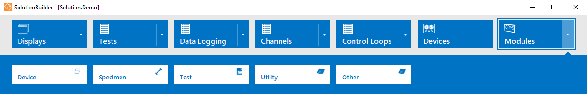
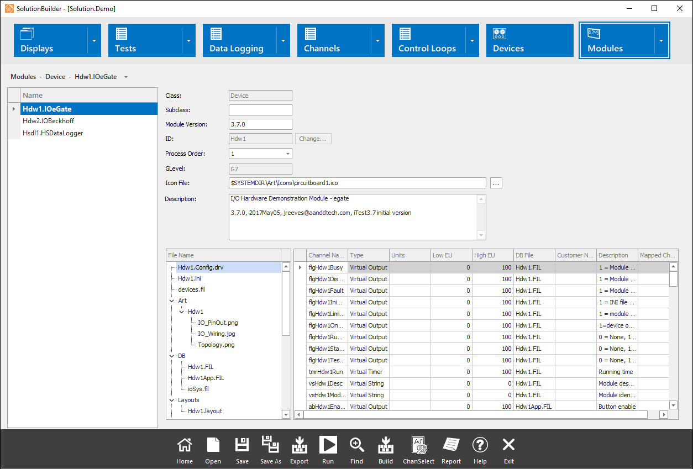
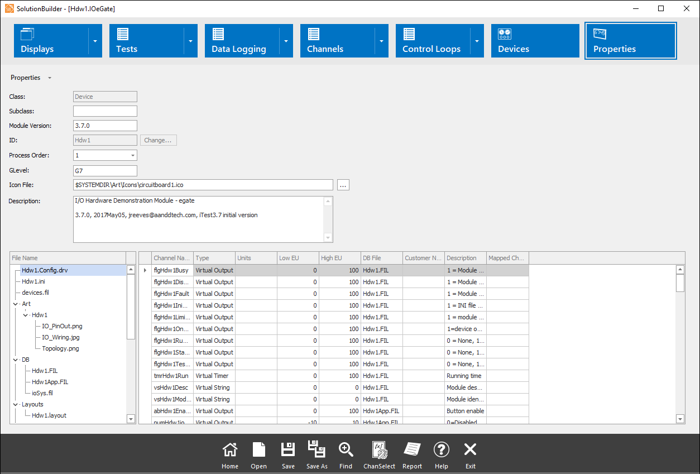

iTest User's Guide
Modules in iTest are a collection of iTest files that are designed to be added and removed from your solution as a named unit and provide additional functionality (e.g., running a specific test or providing a ready to run interface to a device). To support the use of modules, refer to the Modules in iTest documentation. This document details how to manage modules in SolutionBuilder.
To import a module in SolutionBuilder, right-click on the module list in the Modules editor and select the Add option. This launches the Import Module dialog, where you can select the module to import.
To export a module, right-click on a specific module name in the Modules editor and select the Export option. This launches the Export Module to LabCentral dialog, where you can provide an alternative name for the destination module and enter any applicable comments.
For more information, refer to the Modules in iTest documentation.
In SolutionBuilder, each module type included in the solution will be listed in its own editor. For example, if a solution contains any specimen modules, then the specimen modules will be listed in the Modules > Specimen editor. To access the module's editor, open SolutionBuilder then select Modules > Module Type (e.g., Device).
Module Editor

The following right-click options are available when right-clicking in the left pane:
Right-Click Options
| Option | Description |
| Add* | Launches the Import Module dialog, allowing you to import a module. For more information, refer to the Importing Modules documentation. |
| Remove* | Removes the selected module. |
| Rename* | Renames the selected module. Refer to the Module Naming section for the correct naming convention. |
| Duplicate* | Duplicates the selected module. Enter the name and module ID for the duplicated module. Refer to the Module Naming section for the proper naming convention. |
| Export | Exports the selected module to your local drive or to LabCentral. For more information, refer to the Exporting Modules documentation. |
| Update* | Downloads the latest version of the module from LabCentral. This option is only available when ModuleRevisionControl=TRUE. For more information, refer to the Updating Modules documentation. |
| Channel Assignment | Launches the Channel Assignment dialog, allowing you to assign module channels to system I/O channels where appropriate. For more information, refer to the Channel Assignment documentation. |
| Module Configuration | Launches the Module Configuration dialog, allowing you determine module settings from a single interface. For more information, refer to the Module Configuration Dialog documentation. |
Module properties can be managed directly in the Module editor or in the Module Properties editor. The Module Properties editor is available when editing a standalone module. For system modules, the Module Properties editor is only available when Modularity=TRUE in the $SUPPORTDIR\powertek.ini file and there are no modules in the $SUPPORTDIR\Modules folder:
Editing Module Properties - Module Type Editor

Editing Module Properties - Module Properties Editor

The following fields are available to manage the module:
Module Editor Fields
| Field | Description |
| Class | The module type (i.e., System, Device, Specimen, Test, Utility). |
| Subclass | The module subclass. This is used to differentiate between device modules. For example, in iTest.BTS, the Bcc1PolyScience and the Cincinnati CSZ560i modules use the Device class, indicating that they are device modules. However, the Bcc1PolyScience module uses the Chiller subclass while the Cincinnati CSZ560i module uses the Chamber subclass. |
| Module Version | The module version number. |
| ID | The module ID. This field is read-only for the System module (i.e., Sys). If using SolutionBuilder, click the Change... button to change the module ID. You must either save previous modifications or reopen the solution prior to changing the module ID. Refer to the Module Naming section for the proper naming convention. |
| Process Order | Select the process order for the module. The process order defines the order for the calculations compared to the other modules in the solution. A lower number will always precede a higher number when the calculation files are ordered. |
| GLevel | The GLevel used for the module. This field can only be edited in the Module Properties editor; otherwise, this field will be read-only. |
| Icon File | The icon file used for the module. |
| Description | The description for the module. This is typically used to enter revision notes for the module. |
| File Name* | The list of files available in the module. You can double-click the file name to edit it if the editor is available. For example, double-clicking a layout file will launch the Layouts editor. If an editor is not available, then an error message will display. |
| Channel Definitions* | The list of channels available in the module including the channel name, channel type, description, and more. |